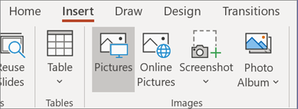
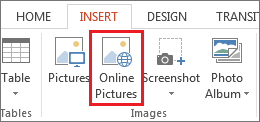
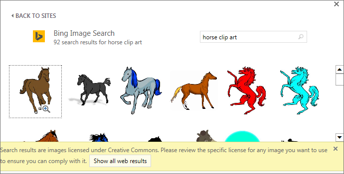

Depending on which version of PowerPoint you're using, you can insert pictures, photos, clip art, or other images to your slide show from your computer or from the Internet.
You can add single or multiple images onto a slide, the slide master, or to the background.
Click where you want to insert the picture on the slide.
On the Insert tab, in the Images group, click Pictures.
In the dialog box that opens, browse to the picture that you want to insert, click that picture, and then click Insert.
Tip: If you want to insert multiple pictures at the same time, press and hold the Ctrl key while you select all the pictures you want to insert.
Click where you want to insert the picture on the slide.
On the Insert tab, in the Images group, click Online Pictures.
(PowerPoint 2013) In the Bing Image Search box, type what you are searching for, and press Enter.
Or
(Newer versions) Ensure Bing is showing on the left in the drop-down list of sources to search. In the box, type what you are searching for, and press Enter.
Use the Size, Type, Color, Layout, and licensing filters to adjust the results according to your preferences.
Click the picture you want to insert, and click Insert.
Tip: After you insert a picture, you can change its size and position. To do so, right-click the picture, and click Format Picture. You can then use the Format Picture tools that are on the right of your slide.
Unlike some earlier versions of PowerPoint, PowerPoint 2013 and newer versions don't have a clip art gallery. Instead, use Insert > Online Pictures to find and insert clip art using the Bing search tool.
For example, after you select Online Pictures, you might search for horse clip art and see a variety of images under a Creative Commons license.
